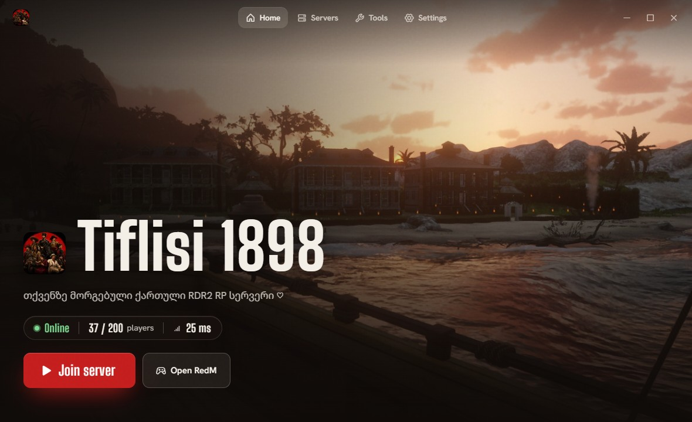
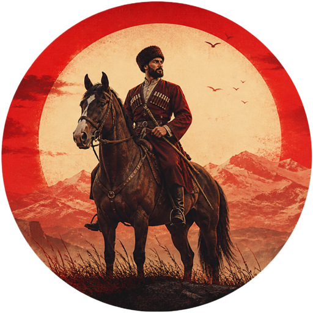

Tiflisi Launcher
Join your server in one click, browse every public RedM server, and fix the usual game problems. Free and open source.


Tiflisi LauncherJoin your server in one click, browse every public RedM server, and fix the usual game problems. Free and open source.
